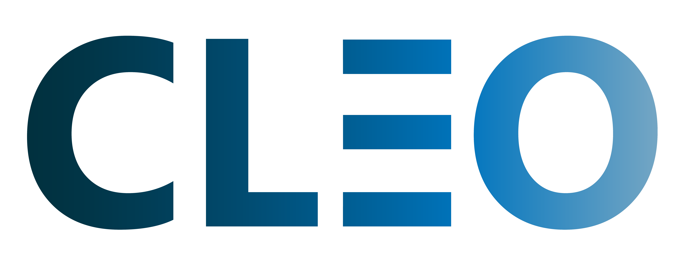
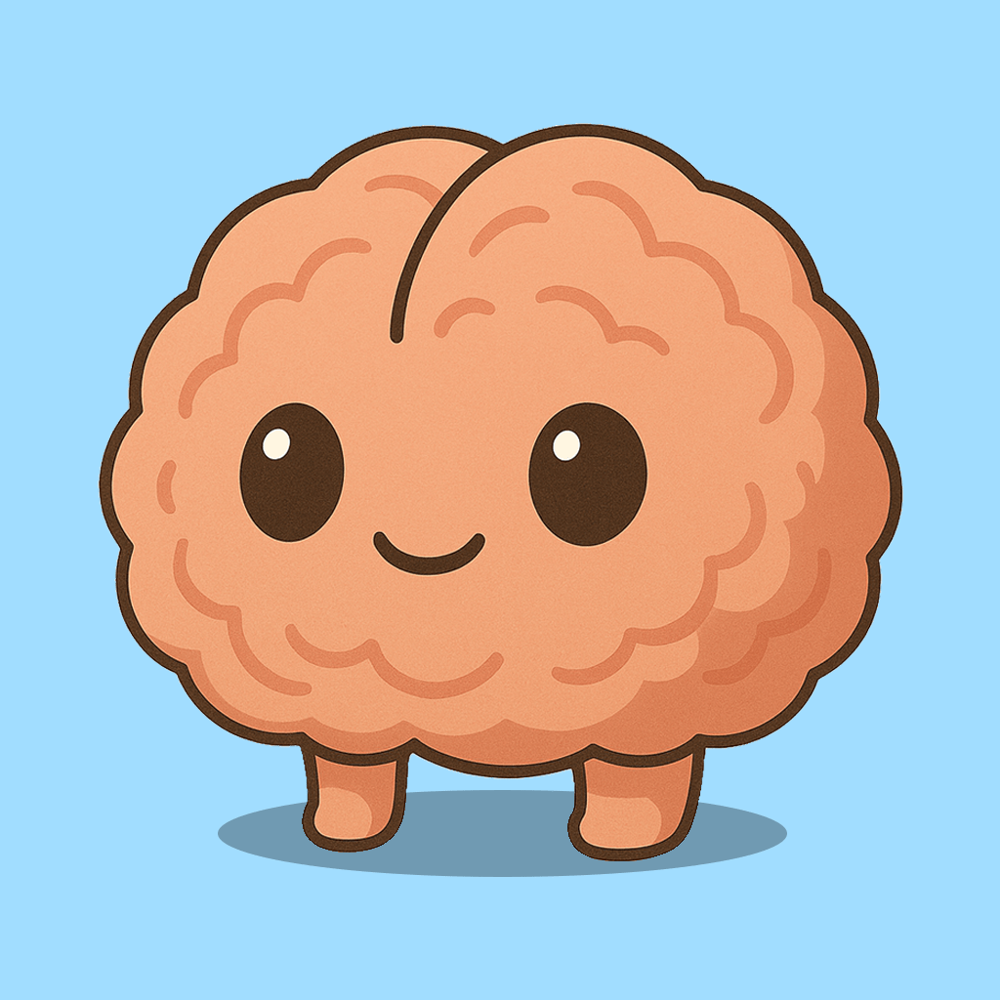
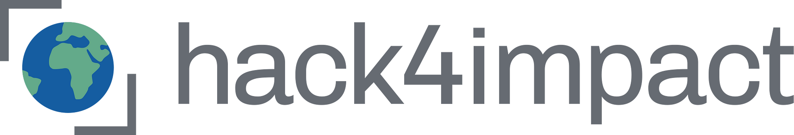
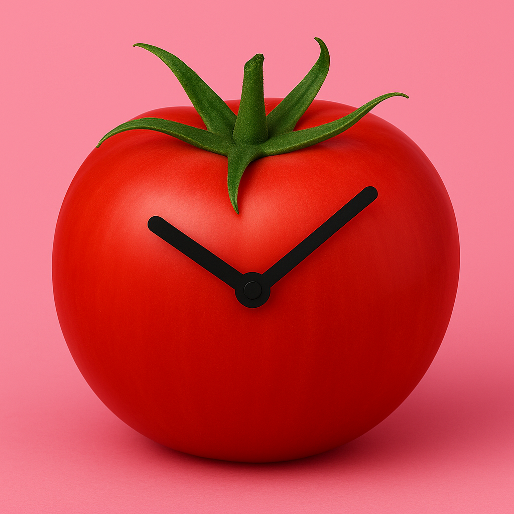
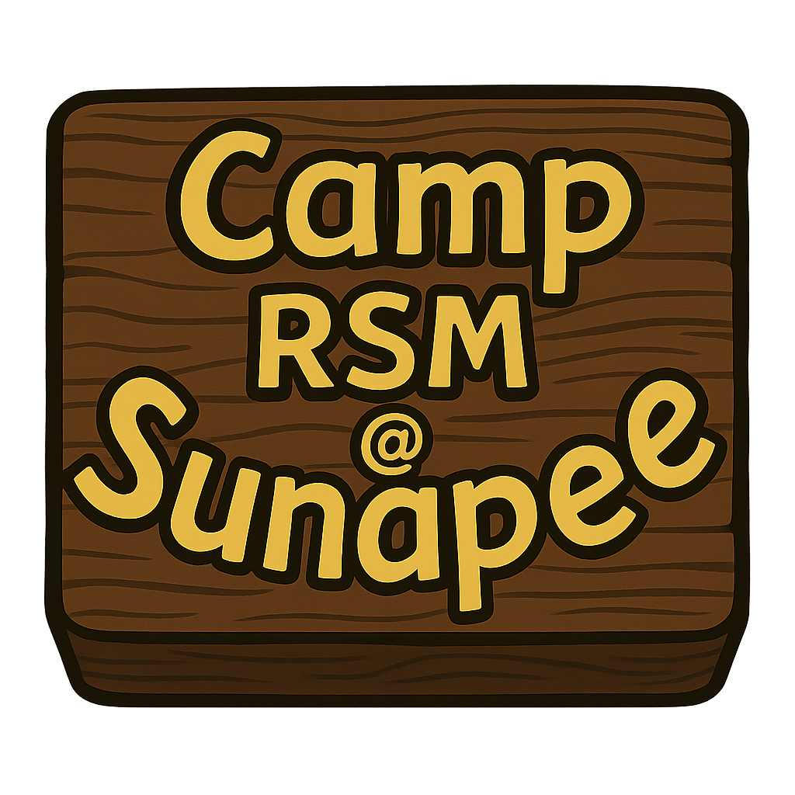

Hi, I'm Aaron Smolyar.
I study Artificial Intelligence at the University of Pennsylvania, and I spend most of my time working on projects combining education, technology, and social impact.
 Initiative
In 2021, I co-founded the CLEO Initiative to help bridge the digital divide by teaching technology skills to older adults. What began as volunteering at the retirement home next door to our school grew into a national nonprofit that partners with libraries and senior centers around the country.
Our Mission
Our mission is to establish a community around providing access to technology and improving the quality of life for seniors who lack digital literacy skills.
Media Recognition
Our work was featured on CBS News by Steve Hartman, Modi Rosenfeld's podcast, and several national publications. More information about our impact and ongoing programs can be found at the link below.
I designed and developed the organization's website, creating an online presence that helped us expand our reach and connect with more seniors and community partners across the country.
 brainrot
A digital wellness app that turns screen time into a virtual pet.
brainrot is a screen time tracker disguised as a Tamagotchi-style brain pet. The more you doomscroll, the more your brain decays. If you take breaks, it starts to heal.
I built brainrot to make digital wellbeing feel less clinical and more immediate. It uses Apple's Screen Time API, Core Motion, and local notifications to track behavior and nudge you in real time.
 Projects
Tech for social good at the University of Pennsylvania
Through Hack4Impact at Penn, I've had the chance to work on two nonprofit projects that align closely with my passion for tech for good.
As a Project Manager for Guitars Over Guns, I'm leading a team building a web-based impact report platform. This will replace their static PDF reports and allow them to share their outcomes more dynamically and persuasively with funders, partners, and the public.
As a Developer on a project with Catalyst Kitchens, I helped build a data visualization dashboard that allows their team to monitor and analyze performance across a national network of community kitchens. The dashboard supports insights on hunger relief, workforce development, and capital project impact.
Both projects utilize MERN stack technologies (MongoDB, Express, React, Node.js) along with data visualization libraries to build impactful web applications for these nonprofits.
Guitars Over Guns
Project ManagerMusic mentorship for at-risk youth
Catalyst Kitchens
DeveloperCulinary training and hunger relief
 Chess
Chess
Why Chess?
Chess has been a hobby of mine for years now. I love it a lot, even if I'm not all that great at it. I think I am drawn to the game because every game forces me to think in new ways. I spend a lot of my free time playing bullet online, but I also love playing live chess with friends.
Chess in Java
I built a chess app in Java as part of a personal project, documenting every step in a video series on YouTube. I didn't have the ability to finish it in high school, but I finished it in college. I have linked the final demo below and the github repo.
Demo of my chess final chess app
Documenting my journey building the chess app
Tournament play at the Southwest Florida Chess Championship
SWFL Chess League Championship Winners
Southwest Florida High School Chess League
In high school, I founded the Southwest Florida High School Chess League, organizing matches and events across 8 schools in the region. It was the first time I created a real community around a passion of mine. It was by far one of the highlights of my high school experience.
 Tomadoro App
Tomadoro is a Pomodoro-style timer app with motion-based controls. Instead of tapping buttons, you use subtle gestures to start, pause, or reset.
Designed to help you stay focused without fiddling with your phone, Tomadoro makes starting a work session feel as frictionless as possible.
I built Tomadoro during my finals season this year when I was struggling to focus during finals season. I needed something that wouldn't let me touch my phone every time I felt bored. The motion controls were my solution – if you pick up your phone for even 10 seconds, it fails your focus session. It helped me maintain deep focus when I needed it most (although building it was a distraction in and of itself if I am being honest).
 Camp RSM
Where It All Started
Camp RSM is where I grew up. I started as the youngest camper, and this summer, I'll return as one of the camp's alumni directors. To come full circle like this is incredibly meaningful and special to me, and I am hoping to make the most out of my last summer here.
It's where I learned to lead, listen, and find joy in building experiences for others. From teaching math to organizing secret night activities for my campers, I discovered what it means to go all in on a community that I love.
My first cabin as a counselor
Me and my camper

My first year at camp
Camp Commander
The Commander announcement is a special tradition that marks the beginning of camp hype cycle. I was lucky enough to be able to make this video to announce who would be the commanders this year. Political satire is a common theme at camp, and this year's video is no exception.
Our camp commander announcement video for the upcoming season.
The opening ceremony at Camp RSM is a very special tradition. This video captures the this camp tradition.
Camp on Google Maps
Growing up, I was totally obsessed with camp. I wanted to be able to experience camp from anywhere in the world. As a counselor, I built this tool for future campers who were obsessed with camp like me and wanted to look around the campgrounds from the comfort of their own homes.
To make this, I spent all my free time over the course of a couple days walking the campgrounds and taking photos with my 360 camera. I then used an online tool to lay out and orient the photos over google maps data, and I then deployed the final map to google earth and google maps. When I get campsick, I often pull up the map and take a virtual walk around camp to quell my nostalgia.
 Music
Music
I started playing guitar in middle school, and have been playing ever since. In high school, I started a bend that played at our open mic nights which I hosted every quarter. I also help run the band at Camp RSM.
While I'm not ready to leave everything behind for a music career, I enjoy playing covers with friends and occasionally writing original songs. I am hoping to release an album with a friend from Penn in the near future.
Acoustic guitar performance
Live guitar performance
Get in Touch
"You are not obligated to complete the work, but neither are you free to abandon it."